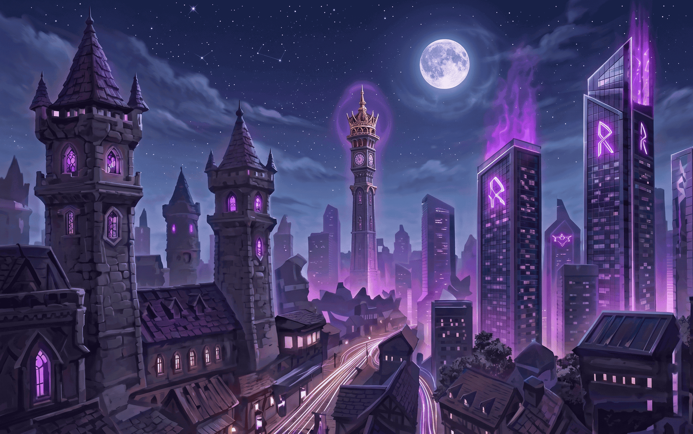
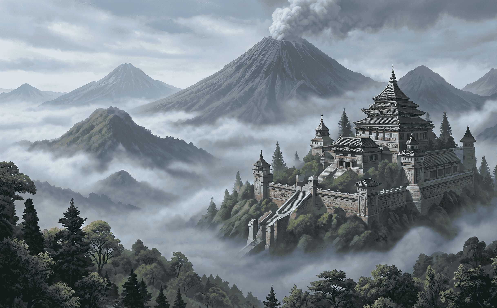
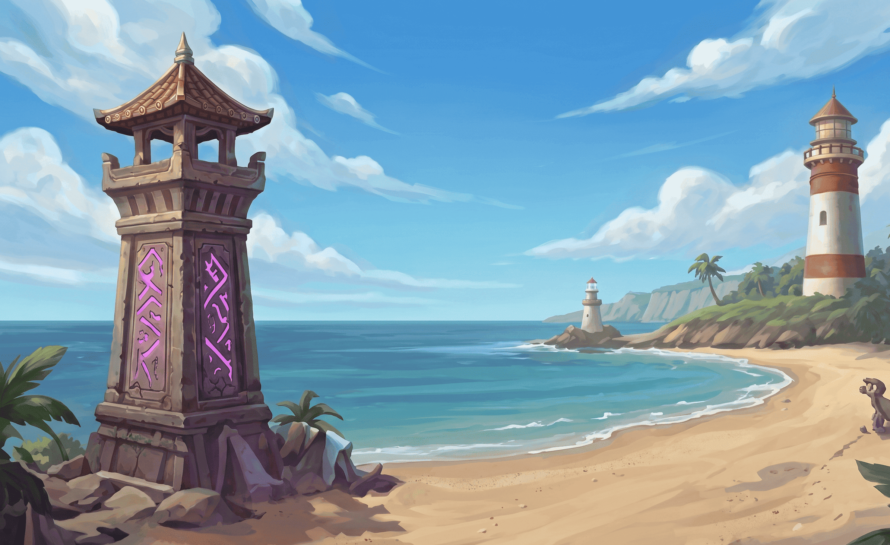

The Grimoire of BaNG
Forged within the boundless depths of the digital ether at the dawn of 2018, ours is a magical fellowship born from a shared vision. For years, we have dedicated ourselves to bridging distant realms, drawing together wandering souls to cultivate a rare and unbreakable camaraderie.
Chronicles of the Realm
2018: The Summoning
A handful of adventurous souls gathered under a unified banner, sparking the first magical embers of what would become the BaNG fellowship.
2020: The Great Expansion
As chaos reigned in the mundane world, our digital sanctuaries grew. Hundreds flocked to the banners, seeking refuge, strategy, and epic loot.
Present: Allied Realms
Today, we span multiple physical hubs, uniting digital prowess with real-world bonds, crafting legends that transcend the screen.
Sanctuaries of the Physical Realm
Where avatars meet face-to-face.

Jakarta Enclave
The bustling capital of our guild. A massive nexus of strategy, trading, and late-night raids amidst the city lights.
Jakarta Enclave
Hidden beneath towering neon citadels and ancient arcane towers, Jakarta Enclave stands as the beating heart of the Clash of BaNG realm. Warriors, tacticians, and merchants from every region gather here to exchange battle knowledge, forge alliances, and prepare for legendary midnight raids. Known for its fast-paced energy and endless activity, the enclave never truly sleeps. From underground Dark Troop arenas to elite strategy councils, Jakarta Enclave is where champions rise and guild legends are born.

Bandung Highlands
A cooler, strategic retreat. Here, scholars and tacticians gather to draft the next grand offensive amidst misty mountains.
Bandung Highlands
Hidden beyond the mist-covered mountains, Bandung Highlands serves as the realm's sanctuary of strategy and wisdom. Scholars, tacticians, and veteran commanders gather within its ancient halls to prepare grand offensives and study forgotten battle doctrines. Surrounded by cold winds and drifting violet fog, the Highlands remain a peaceful yet powerful stronghold where the future of the Clash of BaNG realm is forged.

Sanur Outpost
Where the ocean meets the magic. A relaxed sanctuary for veterans to rest, recount tales, and train new initiates.
Sanur Outpost
Resting along the enchanted shores of the eastern realm, Sanur Outpost is a peaceful sanctuary where veteran warriors gather to recover, share legendary battle tales, and train the next generation of initiates. Beneath glowing coastal lanterns and the endless ocean breeze, the outpost stands as a symbol of wisdom, unity, and renewal within the Clash of BaNG realm.
The First Spellcasters
The architects of our realm.

Aric the Swift
Grand Strategist Aric the Swift
Renowned for his unmatched battlefield instincts, Aric the Swift commands entire armies with precision and speed. His strategies have led countless guilds to victory during the realm's darkest wars.

Lyra Moonweaver
Chief Diplomat Lyra Moonweaver
A master of diplomacy and ancient lunar magic, Lyra Moonweaver forges alliances between rival clans and maintains peace across the realm through wisdom and grace.

Brog the Anvil
Master of Coin Brog the Anvil
Guardian of the realm's vast treasury, Brog the Anvil oversees trade routes, war funding, and resource distribution that keep the guilds thriving through every conflict.

Eldrin Lorekeeper
Archivist Eldrin Lorekeeper
Keeper of forgotten knowledge and sacred histories, Eldrin Lorekeeper preserves ancient battle doctrines, magical records, and the legends that shaped Clash of BaNG.